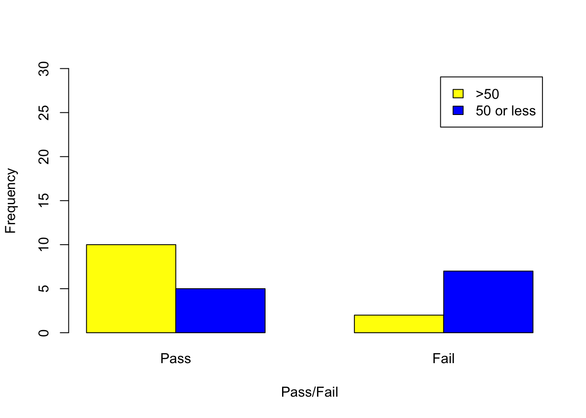
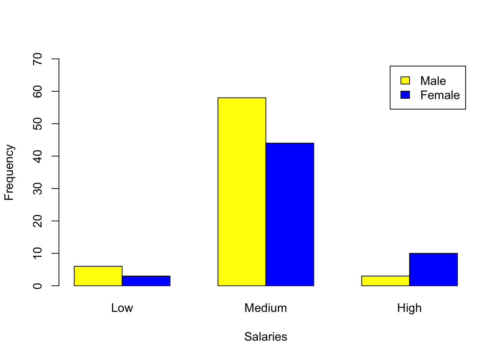

help("dhyper")
dhyper(3,8,12,10)[1] 0.2400572phyper(2,8,12,10)[1] 0.08490117phyper(5,8,12,10,lower.tail = F)[1] 0.08490117Please note that there is a file on Canvas called Getting started with R which may be of some use. This provides details of setting up R and Rstudio on your own computer as well as providing an overview of inputting and importing various data files into R. This should mainly serve as a reminder.
Recall that we can clear the environment using rm(list=ls()) It is advisable to do this before attempting new questions if confusion may arise with variable names etc.
In this example we will see how to calculate probabilities from the hypergeometric distribution.
“Suppose we have a box of 20 marbles in which 8 are blue and 12 are red. Ten marbles are taken from the box without replacement. Find the probability of obtaining exactly 3 blue marbles.”
help("dhyper")
dhyper(3,8,12,10)[1] 0.2400572phyper(2,8,12,10)[1] 0.08490117phyper(5,8,12,10,lower.tail = F)[1] 0.08490117If we add 5 blue marbles to the box in the example above, but keep the sample the same (10), what is \(P(X>4)\)?
phyper(4,13,12,10,lower.tail = F)[1] 0.7158837Suppose we now have a situation where we have 10 green and 20 white marbles and 15 are selected. Let \(Y\) denote the number of green marbles selected, i.e. \[Y\sim\text{hypergeometric}(30,10,y).\] Calculate \(P(Y=5)\) and \(P(Y<3)\).
dhyper(5,10,20,15)[1] 0.3001499phyper(2,10,20,15)[1] 0.02508746In this example we will see how to use Fisher’s Exact Test in R. Firstly, remind yourself why we would use this test over the \(\chi^2\) test - see the lecture notes or full details. This is important when interpreting the R output.
We will consider Example 3.9 in the lecture notes where we investigate whether there is a relationship between attendance and exam results. Clearly we have independence, i.e. each member can only contribute to one entry in the table:
| Pass | Fail | Totals | |
|---|---|---|---|
| Attendance \(\mathbf{>50\%}\) | 10 | 2 | 12 |
| Attendance \(\mathbf{\leq50\%}\) | 5 | 7 | 12 |
| Totals | 15 | 9 | 24 |
Recall the hypotheses:
Firstly input the data into R and create a matrix:
Row1<-c(10,2)
Row2<-c(5,7)
AttendanceMatrix<-matrix(c(Row1,Row2), byrow=T,nrow=2,
dimnames=list(c(">50","50 or less"),c("Pass","Fail")))
AttendanceMatrix Pass Fail
>50 10 2
50 or less 5 7barplot(AttendanceMatrix,
beside=TRUE,
ylim=c(0, 30),legend=T, col=c("yellow","blue"),
xlab="Pass/Fail",
ylab="Frequency")
result<-chisq.test(AttendanceMatrix, correct=T)
result
Pearson's Chi-squared test with Yates' continuity correction
data: AttendanceMatrix
X-squared = 2.8444, df = 1, p-value = 0.09169result$expected Pass Fail
>50 7.5 4.5
50 or less 7.5 4.5help("fisher.test")
fisher.test(AttendanceMatrix, alternative = "greater")
Fisher's Exact Test for Count Data
data: AttendanceMatrix
p-value = 0.04469
alternative hypothesis: true odds ratio is greater than 1
95 percent confidence interval:
1.044487 Inf
sample estimates:
odds ratio
6.394505 The table below contains information on the number of males and females earning low, medium and high salaries in a particular institution.
| Low | Medium | High | Totals | |
|---|---|---|---|---|
| Male | 6 | 58 | 3 | 67 |
| Female | 3 | 44 | 10 | 57 |
| Totals | 9 | 102 | 13 |
Investigate whether there is an association between salary level and male and female earnings, justifying the method you use.
Row3<-c(6,58,3)
Row4<-c(3,44,10)
SalariesMatrix<-matrix(c(Row3,Row4), byrow=T,nrow=2, dimnames=list(c("Male","Female"),c("Low","Medium", "High")))
SalariesMatrix Low Medium High
Male 6 58 3
Female 3 44 10barplot(SalariesMatrix,
beside=TRUE,
ylim=c(0, 70),legend=T, col=c("yellow","blue"),
xlab="Salaries",
ylab="Frequency")
result2<-chisq.test(SalariesMatrix)
result2
Pearson's Chi-squared test
data: SalariesMatrix
X-squared = 5.9229, df = 2, p-value = 0.05174result2$expected Low Medium High
Male 4.862903 55.1129 7.024194
Female 4.137097 46.8871 5.975806Hence we use Fisher’s exact test as more than 20% of expected counts are <5 (independence is still required).
The help function should be used to make sure we perform an appropriate two-tailed test.
help("fisher.test")fisher.test(SalariesMatrix)
Fisher's Exact Test for Count Data
data: SalariesMatrix
p-value = 0.04497
alternative hypothesis: two.sidedThis is a significant result, hence there seems to be an association between salary and male and female employees.
Visual inspection of the barplots indicates that there are more female higher earners, but more male middle earners.